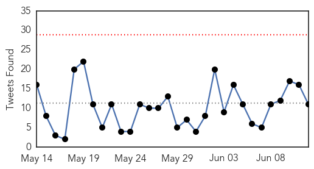
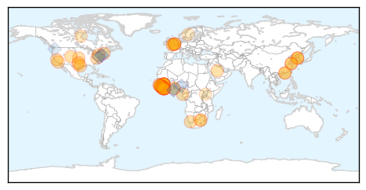

Unknown
30-Day Web Trend
8 alerts, 1 warnings

30-Day Twitter Trend
5 alerts, 1 warnings

Article Locations

Article Confidences

Top Articles:
- 1.000
- Riyadh reports 1 MERS death case, 453 fatalities in total since 2012 - Xinhua
- 1.000
- CDC Issues Health Advisory Amid MERS Outbreak
- 0.999
- WHO to hold MERS emergency meeting soon
- 0.999
- MERS outbreak: WHO to call emergency meeting on deadly disease
- 0.999
- WHO to hold Mers emergency meeting next week, East Asia News & Top Stories
- 0.999
- Hospitals sealed off in S Korea MERS outbreak
- 0.999
- WHO to hold MERS emergency meeting next week
- 0.999
- WHO to Hold MERS Emergency Meeting Soon
- 0.999
- WHO to hold soon MERS emergency meeting
- 0.999
- WHO to hold soon MERS emergency meeting
- 0.999
- WHO calls emergency meeting on MERS as death toll rises in South Korea
- 0.999
- Korea reports 13th Mers death but new cases slowing
- 0.999
- MERS outbreak kills 11 and quarantines thousands as Seoul seals hospitals
- 0.999
- WHO to hold soon MERS emergency meeting
- 0.999
- WHO sees no need for MERS travel curbs
- 0.999
- WHO to hold emergency meeting over MERS outbreak
- 0.999
- WHO to hold MERS emergency meeting
- 0.999
- World Health Organization to hold MERS emergency meeting next week
- 0.998
- WHO sees no need for MERS travel curbs
- 0.998
- Airports on alert
- 0.997
- PM Lee, news, Health News, AsiaOne YourHealth
- 0.997
- (2nd LD) S. Korea confirms 11th death from MERS
- 0.997
- (LEAD) S. Korea reports 4 more MERS cases, bringing total to 126
- 0.996
- S. Korea reports four new MERS cases - Regional
- 0.996
- Health officials tell U.S. doctors to watch for MERS
- 0.996
- (4th LD) S. Korea confirms 11th death from MERS
- 0.996
- (3rd LD) S. Korea reports another MERS death, 14 new cases
- 0.995
- A wave of hope as South Korea mulls reopening schools in MERS outbreak
- 0.994
- South-Korea-mulls-reopening-schools - Story
- 0.994
- S. Korea reports 4 more MERS cases, bringing total to 126
- 0.994
- (3rd LD) S. Korea confirms 11th death from MERS
- 0.992
- The World On Arirang
- 0.992
- Saudi Arabia Experts in S. Korea on Talks of MERS
- 0.991
- South Korea reports 10th death from MERS virus
- 0.990
- MERS death toll hits 11 in South Korea
- 0.990
- MERS may be spreading in new way-INSIDE Korea JoongAng Daily
- 0.989
- MERS warriors lead containment fight
- 0.989
- Migration could limit steps to contain MERS
- 0.989
- South Korea infections prompt virus alert in Minnesota
- 0.989
- S. Korea reports 10th death from MERS virus
- 0.989
- South Korea seals hospitals to stop MERS outbreak Vatican Radio
- 0.988
- South Korea seals hospitals to stop MERS outbreak
- 0.988
- 40 Poultry farm workers screened
- 0.987
- MERS infections abate in S. Korea with 4 more cases
- 0.987
- A needed wave of hope as South Korea mulls reopening schools in MERS outbreak
- 0.986
- [In Depth] Amid panic, a chance to learn about MERS
- 0.985
- Korea-WHO joint mission releases message to public :: Korea.net : The official website of the Republic of Korea
- 0.984
- Singapore on standby for inevitable MERS case, says PM
- 0.984
- U.S. health care workers advised to ask patients about travel history to S. Korea
- 0.984
- No Travel Ban Needed Yet To Curb MERS, Says World Health Organization
Showing top 50 articles...
Top Tweets:
- 0.838
- RT: ironorehopper MERS virus: South Korea child tests positive [infected outside hospital settings] (The Stan... http:/…
- 0.712
- RT: 4 new cases of MERS but big increase in ppl released from quarantine. Deaths: 10 Cases: 126 Cured: 7 Out of quarantine: 1…
- 0.638
- RT: With four more MERS cases announced total in South Korean outbreak now 126. 11 patients have died.
- 0.629
- RT: @WHO says all SKorean MERS cases still link back to 1st case; no evidence the virus there is more transmissible. http:…
- 0.581
- FluFactFriday: The 2014-15 flu season was a moderately severe flu season similar to previous H3N2-predominant seasons.
Ebola
30-Day Web Trend
0 alerts, 0 warnings

30-Day Twitter Trend
0 alerts, 0 warnings

Article Locations
Article Confidences

Top Articles:
- 1.000
- Rise in new cases shows Ebola has not released its deadly grip
- 1.000
- Ebola outbreak: Timeline of outbreak in West Africa
- 1.000
- Ebola Resurgent: African States Report Alarming Rise in Cases
- 1.000
- Dozens of new Ebola cases reported in Sierra Leone and Guinea
- 0.999
- donga.com[English donga]
- 0.998
- Sierra Leone leader imposes curfew in bid to halt Ebola
- 0.997
- OraSure Technologies : rapid Ebola test in line for up to $10.4 million in federal funding
- 0.997
- Sierra Leone announces new measures to halt Ebola
- 0.997
- National Geographic Magazine
- 0.996
- Liberia still cautious after Ebola-free declaration
- 0.996
- Sierra Leone announces new curfew to halt Ebola
- 0.996
- 5 things to know for your New Day -- Friday, June 12
- 0.995
- Awards for 'exceptional' Ebola work
- 0.995
- CDC warns U.S. doctors: Be on the lookout for MERS
- 0.994
- New Entry Screening and Monitoring Guidelines for Travelers Entering the United States from Liberia
- 0.993
- Ebola instant test: HHS signs $1.8M contract with Pennsylvania company
- 0.993
- Africa – what’s the score?
- 0.993
- Politico SL News SMART wins international award
- 0.990
- Quick, cheap, easy help in stopping disease
- 0.990
- Ebola nurse Will Pooley gets MBE honour
- 0.989
- A Chinese Ebola Drug Raises Hopes, and Rancor
- 0.988
- Phase 3 Ebola Vaccines Clinical Study Conference Opens in Conakry
- 0.985
- Virginia Hospital Center's Ebola Relief container arrives in (...)
- 0.985
- Ebola Scan for Jun 12, 2015
- 0.984
- MERS quarantine ends for 75 under observation
- 0.983
- Silicon Valley firm warns against travel to S. Korea
- 0.980
- Ebola drug made in China fuels hope — and controversy
- 0.980
- The most from the coast
- 0.979
- Sierra Leonean and Guinean leaders visit border to reinvigorate Ebola response
- 0.975
- Stigmatised: The Ebola heroes no one will hire
- 0.974
- Helen Shirley-Quirk named in Queen's Birthday Honours for battle against epidemics
- 0.969
- ACT Alliance Appeal: Post-Ebola Recovery Program in Liberia – LBR151 - Liberia
- 0.967
- Ghana suspends Ebola vaccine trial, claims citizens used as guinea pig
- 0.966
- Los Angeles Prepares for MERS With a Laid-Back Stance
- 0.951
- Doctor who fought Ebola inspires Academy of Notre Dame grads
- 0.951
- Seoul a ghost town as South Korea grapples with Mers fear
- 0.950
- Tour Operators Seeing Few MERS-Related Cancellations
- 0.944
- Suffolk Ebola survivor Will Pooley awarded an MBE
- 0.926
- Santa Fe company part of push for Ebola vaccine
- 0.902
- British people involved in fight against Ebola in Africa to get medal
- 0.898
- Ellen applauds G7 Summit’s success
- 0.898
- Gov't was warned against Ebola vaccine trial
- 0.892
- Ebola Trial Not A Referendum
- 0.886
- Politico SL News Interview: Ending Ebola will be painful – MSF
- 0.859
- SABIN briefs Parliament on Immunization Financing « Awoko Newspaper
- 0.842
- WHO Resident Representative in Sierra Leone Visits the China-aided Fixed Bio-Safety Laboratory and Ebola Holding and Treatment Center
- 0.819
- Unification minister to visit inter-Korean border checkpoint on MERS woes
- 0.819
- Unification minister to visit inter-Korean border checkpoint on MERS woes
- 0.759
- Scientifically, Ebola Clinical Trial Is Not Wrong, But... - Fmr FDA Boss
- 0.743
- Brigade completes Ebola mission in Liberia
Showing top 50 articles...
Top Tweets:
- 0.955
- Ebola Update: 27251 confirmed probable & suspected cases reported in 3 most affected countries with 11163 deaths. EbolaResponse
- 0.877
- RT: New: The Case for Improved Diagnostic Tools to Control Ebola Virus Disease in West Africa and How to Ge ... http:…
- 0.739
- RT: Test your EBOLA KNOWLEDGE with All Against Ebola Game! Your opinion is very important! AllAgainstEbola ht…
- 0.711
- The Case for Improved Diagnosti Tools to Control Ebola Virus Disease in West Africa and How to Get There http://t.co/em2EHNxpBj
- 0.688
- The real killer in the Ebola epidemic - PBS NewsHour (blog) http://t.co/ySwgbKWEcA ebola EVD
- 0.613
- RT: good news for guineabissau: source says number of ebola contacts in the guinea border area has halved to 119 from a wee…
- 0.594
- Ebola: WHO Reports Spike in Cases in Guinea and Sierra Leone http://t.co/VUnLVCZOY8
- 0.591
- Quick cheap way to help stop deadly Ebola - CNBC http://t.co/Z0RvzTwBBG ebola EVD
- 0.573
- Ebola instant test: HHS signs $1.8M contract with Pennsylvania company - Washington Times http://t.co/RbLaclIuHC ebola EVD
- 0.555
- BREAKING: Sierra Leone imposes curfew after a new spike Ebola cases. The outbreak isn't over need is great to end it http://t.co/l8B6ALNeA9
- 0.536
- Using SMS data to monitor exposure to Ebola outbreak & estimate its impact on health behaviour in Liberia http://t.co/GwdhRbnZXu